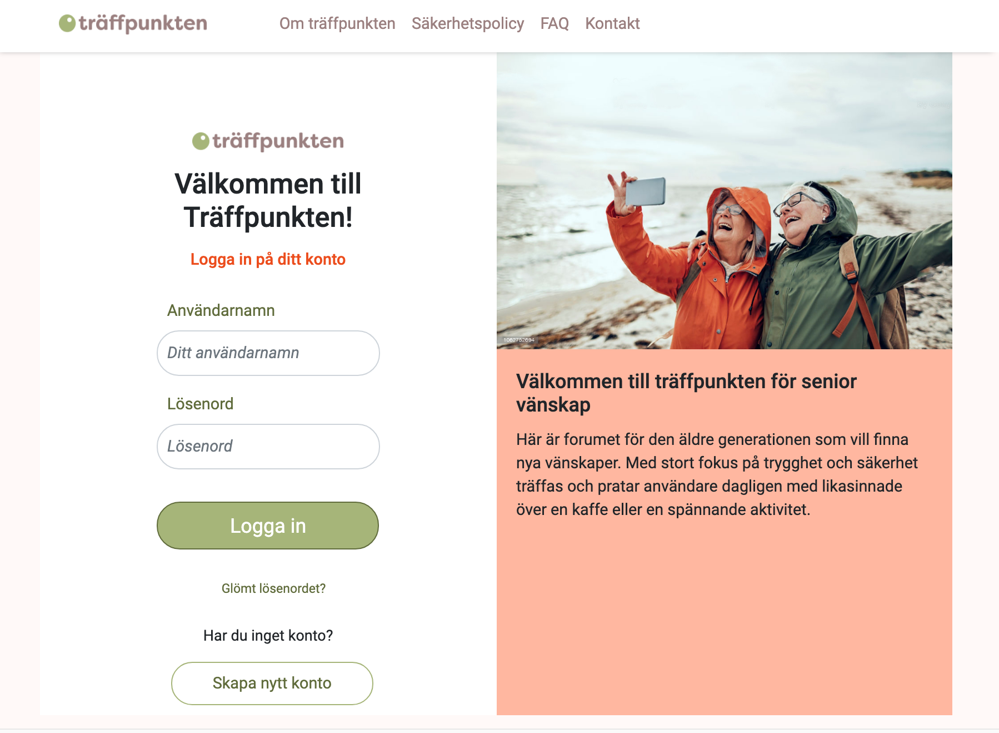
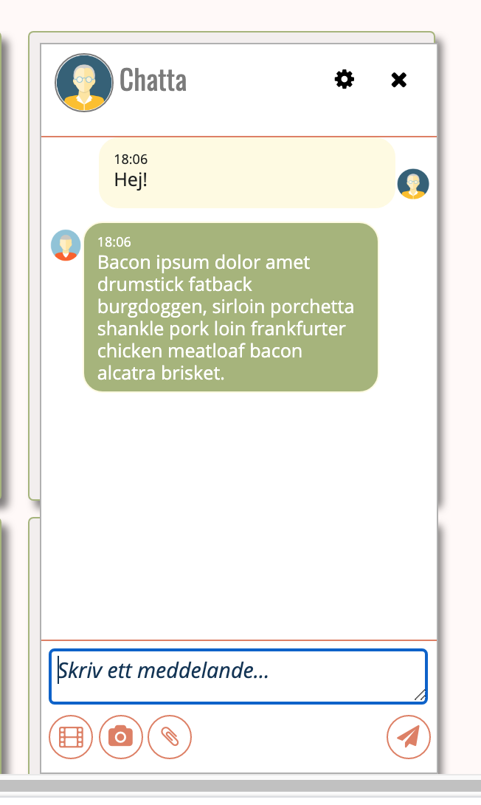

UX
TRÄFFPUNKTEN
Individuell inlämningsuppgift: "Prototyping that looks real", "Programmering för UX-produktion", EC Utbildning 2020.
I uppgift Prototyping that looks real, så ska ni bygga vidare på er social mediasida och ge den minst 3 funktioner med hjälp av Javascript. Kraven för att klara uppgiften:
- Skapa en login sida med ett formulär för användarnamn och lösenord
- Koppla detta till logik så att en användare kan logga in och när hen är inloggad bör användarnamnet synas någonstans på sidan
- Hitta ett JS kode exempel online, som ni sen applicerat på er sida och modifierat för att passa exakt det ni behöver.
- Ni ska även strukturera era filer och mappar så att alla filtyper är i sina egna mappar
- All HTML, CSS och speciellt all JavaScript skall vara väl kommenterad och uppdelad på praktiskt vis
Uppgiften skulle inlämnas som en Github pages länk.
"Träffpunkten" var ett grupparbete. där vi skapade en social mediasida riktade till de äldre. I denna individuella uppgift vidareutvecklade jag chattfunktionen och la till de ovan nämnda funktionerna.
Logga in på sidan med lösenordet "admin" och hitta på valfritt användarnamn. Chattfunktionen hittar du under "Mina vänner"
Länk till Träffpunkten

Chatta med en bot!
Här är ett prov från chattfunktionen.
